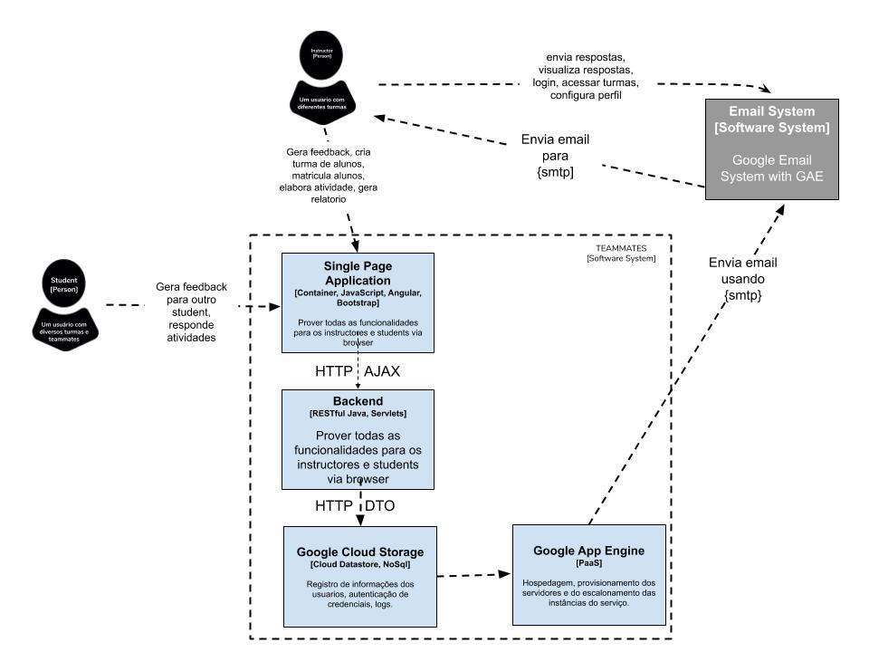

Documentação arquitetural para o TEAMMATES
Autores
Este documento foi produzido por Jonas Gomes Aguiar.
- Matrícula: 115210390
- Contato: jonas.aguiar@ccc.ufcg.edu.br
- Projeto documentado: https://github.com/TEAMMATES
Descrição Arquitetural – TEAMMATES
Este documento descreve a arquitetura do projeto TEAMMATES. Essa descrição foi baseada principalmente no modelo C4.
Descrição Geral sobre o TEAMMATES
O TEAMMATES é um projeto que tem como objetivo “gerenciar avaliações de alunos de um mesmo grupo e outros caminhos de feedback de seus alunos. É fornecido como um serviço baseado em nuvem para educadores e alunos.” Mais detalhes sobre o projeto podem ser vistos neste link.
TEAMMATES
Objetivo Geral
Implementar um serviço para realização de avaliação e feedback entre pares, e professores.
Buscamos ter meios flexiveis de feedback, usufruindo de controle de visibilidade para tal, gerando relatórios e estatisticas, com um controle de acesso refinado. Na geração de avaliação, buscamos disponibilizar diferentes tipos delas, podendo conjunto serem reutilizados. Os alunos poderam ter acesso as atividades e feedbacks via email sem necessitar acessar diretamente a plataforma.
Contexto

O sistema da aplicação do TEAMMATES é utilizado por usuários de dois tipos: Student e Instructor. Eles interagem com o sistema atráves de uma SPA, ou atráves do serviço de email do google. Tem como principais agentes relacionados os usuários, o próprio sistema TEAMMATES e o serviço de email.
Containers

O SPA é a porta principal de acesso com os usários, a comunicação do SPA com o container Backend é feita via http/ajax utilizando de json como modelo de dados. A comunicação entre o backend e o Google Cloud Storage é feita via http/dto. O Google App Engine serve é PaaS que hospeda e orquestra toda a infraestrutura de processos do TEAMMATES.
Componentes

O Backend se expande e divide-se em quatro componentes: UI Server, Common, Logic e Storage. O UI Server consiste em ser o componente que realiza o processamento das requisições, que podem chegar via GAE, retornará uma página da web como resposta utilizando AJAX. O componente Common é o responsavel por disponibilizar os utilitários comuns usados nos outros componentes. O Logic é o componente responsável pela lógica do negócio do TEAMMATES, gerencia os relacionamentos entre entidades, transações, higieniza os valores vindo da UI, oferece controle de acesso e é responsável pela conexão com o GAE e o serviço de email. O Storage é o componente que executa o CRUD dos dados, e é responsável or validar os dados, esconder a complexidade de armazenamento, ocultar a persistência dos objetos, mas ele não executa nenhuma criação ou exclusão em cascata.
Single Page, UI Server e Logic representam um padrão Model-View-Controller.
O UI Server retorna uma WebPage ao usuario atraves de WebPageServelet. O Logic utiliza os seguintes serviços para respostas de requisições: JavamailService, SendgridService, Service, além do GAE Task Queue API. O Common possui três classes internas: util, exceptions e datatransfer. O Storage possui sua API padrão em CRUD HTTP, além da classe entity que representa entidades persistentes, e a classe search usada para lidar com pesquisa e indexação.
Código
Em breve.
Visão de Informação

O caminho de uma requisição vinda do GAE até ser armazenada no Google Cloud Storage.
Contribuições Concretas
Não foi enviado PR ao projeto.